Figure fig_ch02_p047_01 (Page 47) Figure fig_ch02_p047_02 (Page 47) Figure fig_ch02_p047_03 (Page 47) Figure fig_ch02_p047_04 (Page 47) Figure fig_ch02_p047_05 (Page 47) Figure fig_ch02_p047_06 (Page 47) Figure fig_ch02_p047_07 (Page 47) Figure fig_ch02_p047_08 (Page 47) Figure fig_ch02_p047_09 (Page 47) Figure fig_ch02_p047_10 (Page 47) Figure fig_ch02_p047_11 (Page 47) Figure fig_ch02_p047_12 (Page 47) 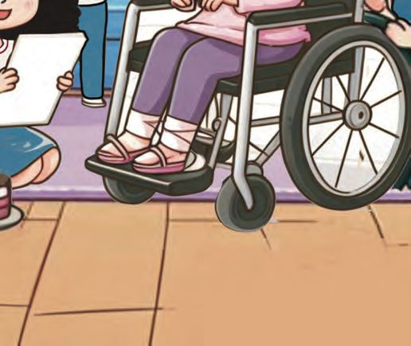
Figure fig_ch02_p047_13 (Page 47) Figure fig_ch02_p047_14 (Page 47) Figure fig_ch02_p047_15 (Page 47) Figure fig_ch02_p047_16 (Page 47) Figure fig_ch02_p047_17 (Page 47) Figure fig_ch02_p047_18 (Page 47) Figure fig_ch02_p047_19 (Page 47) Figure fig_ch02_p047_20 (Page 47) Figure fig_ch02_p047_21 (Page 47) Figure fig_ch02_p047_22 (Page 47) Figure fig_ch02_p047_23 (Page 47) Figure fig_ch02_p047_24 (Page 47) Figure fig_ch02_p047_25 (Page 47) Figure fig_ch02_p047_26 (Page 47) Figure fig_ch02_p047_27 (Page 47) Figure fig_ch02_p047_28 (Page 47) Figure fig_ch02_p047_29 (Page 47) Figure fig_ch02_p047_30 (Page 47) Figure fig_ch02_p047_31 (Page 47) Figure fig_ch02_p047_32 (Page 47) Figure fig_ch02_p047_33 (Page 47) Figure fig_ch02_p047_34 (Page 47) Figure fig_ch02_p047_35 (Page 47) Figure fig_ch02_p047_36 (Page 47) Figure fig_ch02_p047_37 (Page 47) Figure fig_ch02_p047_38 (Page 47) Figure fig_ch02_p047_39 (Page 47) Figure fig_ch02_p047_40 (Page 47)
3
Aami's Birthday
happy birthday
aami
August 10
Today is Aami‛s birthday
Friends are making arrangements
47
Figure fig_ch02_p048_01 (Page 48) Figure fig_ch02_p048_02 (Page 48) Figure fig_ch02_p048_03 (Page 48) Figure fig_ch02_p048_04 (Page 48) 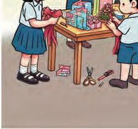
Figure fig_ch02_p048_05 (Page 48) 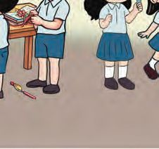
Figure fig_ch02_p048_06 (Page 48) Figure fig_ch02_p048_07 (Page 48) Figure fig_ch02_p048_08 (Page 48)
Let‛s decorate the classroom.
Hai
Aami!
Mizhi..!
There were 9 children in the classroom.
Together with Aami, now there are ten.
9 and 1 make ten 10.
I‛ll also help to
tie up the
balloons.
Ahan joined them.
How many now?
10 and 1 make eleven 11.
48
Figure fig_ch02_p049_01 (Page 49) Figure fig_ch02_p049_02 (Page 49) Figure fig_ch02_p049_03 (Page 49) Figure fig_ch02_p049_04 (Page 49) Figure fig_ch02_p049_05 (Page 49) Figure fig_ch02_p049_06 (Page 49) Figure fig_ch02_p049_07 (Page 49) Figure fig_ch02_p049_08 (Page 49)
Birthday cards
Some of the friends came with greeting cards.
How many are in the line?
th
What is the position of Mizhi from the front?
Find Ahan standing fourth from
the back and draw a circle.
I‛m in the
middle.
Neha is the sixth, from the front
and also from the back.
Draw a balloon in Neha‛s hand.
Let‛s make a greeting card.
Birthday
Greetings
49
Figure fig_ch02_p050_01 (Page 50) 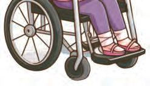
Figure fig_ch02_p050_02 (Page 50) 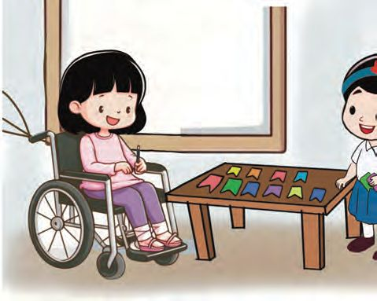
Figure fig_ch02_p050_03 (Page 50) Figure fig_ch02_p050_04 (Page 50) Figure fig_ch02_p050_05 (Page 50)
Let‛s decorate.
Aami and friends are decorating the classroom.
Mizhi..
We can cut like
this to make
festoons.
How?
Let me see.
How many on the table?
After cutting out two more
10 and 2 make twelve 12.
50
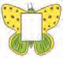
Figure fig_ch02_p051_01 (Page 51) Figure fig_ch02_p051_02 (Page 51) 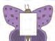
Figure fig_ch02_p051_03 (Page 51) 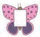
Figure fig_ch02_p051_04 (Page 51) Figure fig_ch02_p051_05 (Page 51) 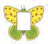
Figure fig_ch02_p051_06 (Page 51) 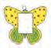
Figure fig_ch02_p051_07 (Page 51) 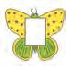
Figure fig_ch02_p051_08 (Page 51) 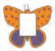
Figure fig_ch02_p051_09 (Page 51) 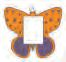
Figure fig_ch02_p051_10 (Page 51) 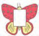
Figure fig_ch02_p051_11 (Page 51) 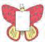
Figure fig_ch02_p051_12 (Page 51) 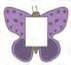
Figure fig_ch02_p051_13 (Page 51) Figure fig_ch02_p051_14 (Page 51) 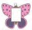
Figure fig_ch02_p051_15 (Page 51) Figure fig_ch02_p051_16 (Page 51) Figure fig_ch02_p051_17 (Page 51)
Birthday greetings
7
3
I
8
5
1
9
6
2
10
R
Y
H
T
B
A
H
4
P
P
Three more
to paste.
13
Y
Numbers
should be
pasted in
order.
11
D
A
12
Can you draw the next three
numbers?
H
A
P
P
Y
B
I
R
T
H
Number of cards pasted
Remaining cards to paste
10 and 3 make thirteen 13.
Write the numbers from 1 to 13 in order.
51
Figure fig_ch02_p052_01 (Page 52) Figure fig_ch02_p052_02 (Page 52) 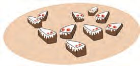
Figure fig_ch02_p052_03 (Page 52) 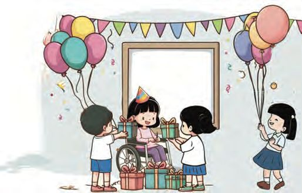
Figure fig_ch02_p052_04 (Page 52) Figure fig_ch02_p052_05 (Page 52) Figure fig_ch02_p052_06 (Page 52) Figure fig_ch02_p052_07 (Page 52) 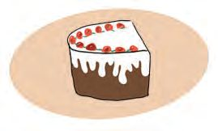
Figure fig_ch02_p052_08 (Page 52)
Let‛s light candles.
Number of candles in the packet
Outside
10 and 4 make fourteen 14.
Birthday cake
Pieces of cake
How many more pieces must be
cut to give everyone a piece?
10 and 5 make fifteen 15.
52
1
Figure fig_ch02_p053_01 (Page 53) Figure fig_ch02_p053_02 (Page 53) Figure fig_ch02_p053_03 (Page 53) Figure fig_ch02_p053_04 (Page 53) Figure fig_ch02_p053_05 (Page 53) Figure fig_ch02_p053_06 (Page 53) Figure fig_ch02_p053_07 (Page 53)
Dance
They wore flower shaped masks.
And got ready for the dance.
How many flowers?
Are there enough masks for all?
How many more needed?
10 and 6 make sixteen 16.
Gifts to friends
I‛ll give you all,
paper flowers
I‛ve made.
10 and 7 make
seventeen 17.
53
Figure fig_ch02_p054_01 (Page 54) 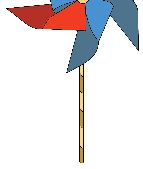
Figure fig_ch02_p054_02 (Page 54) Figure fig_ch02_p054_03 (Page 54) Figure fig_ch02_p054_04 (Page 54) Figure fig_ch02_p054_05 (Page 54) 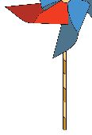
Figure fig_ch02_p054_06 (Page 54) Figure fig_ch02_p054_07 (Page 54) 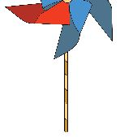
Figure fig_ch02_p054_08 (Page 54) Figure fig_ch02_p054_09 (Page 54) Figure fig_ch02_p054_10 (Page 54) Figure fig_ch02_p054_11 (Page 54) 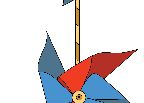
Figure fig_ch02_p054_12 (Page 54) Figure fig_ch02_p054_13 (Page 54) Figure fig_ch02_p054_14 (Page 54) Figure fig_ch02_p054_15 (Page 54) Figure fig_ch02_p054_16 (Page 54) Figure fig_ch02_p054_17 (Page 54) Figure fig_ch02_p054_18 (Page 54)
10 and 8 make eighteen 18.
10 and 9 make nineteen 19.
Ice cream
Aamy‛s mother brought the ice cream.
How many cups in the first box?
How many in the second box?
How many cups in total?
10 and 10 make twenty 20.
54
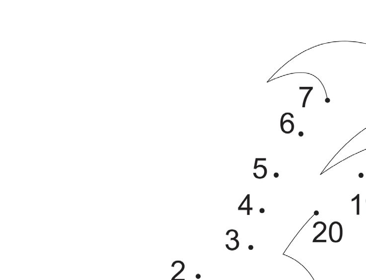
Figure fig_ch02_p055_01 (Page 55) 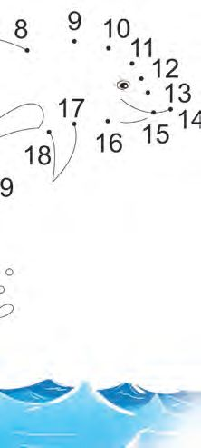
Figure fig_ch02_p055_02 (Page 55) 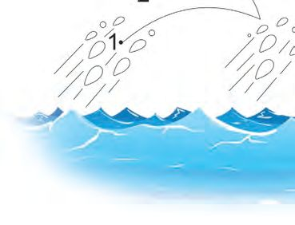
Figure fig_ch02_p055_03 (Page 55) Figure fig_ch02_p055_04 (Page 55)
Who‛s hiding?
Join the dots from 1 to 20.
It‛s Aamy‛s birthday present.
Find out and colour.
Let‛s play.
Each row and column should have the
numbers from 1 to 4.
1
3
4
3
2
2
2
4
55
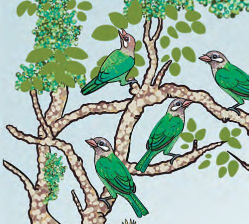
Figure fig_ch02_p056_01 (Page 56) Figure fig_ch02_p056_02 (Page 56) Figure fig_ch02_p056_03 (Page 56) 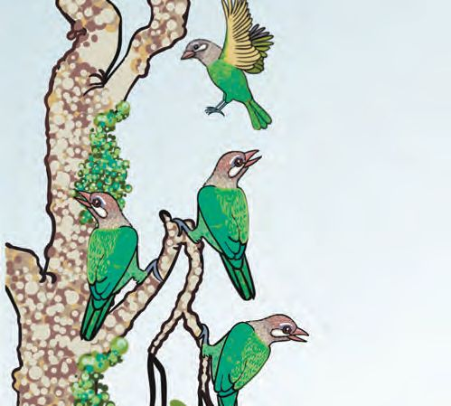
Figure fig_ch02_p056_04 (Page 56) Figure fig_ch02_p056_05 (Page 56) Figure fig_ch02_p056_06 (Page 56) Figure fig_ch02_p056_07 (Page 56) 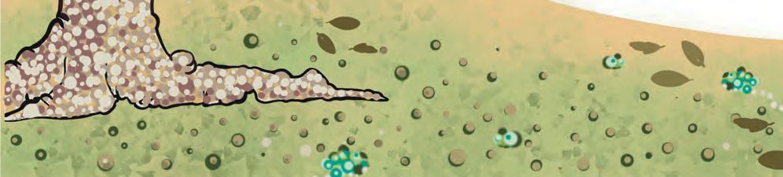
Figure fig_ch02_p056_08 (Page 56)
Join together...
sing together...
Ten little birdies
on a bough.
One more joined them.
How many now?
Eleven little birdies
on a bough.
One more joined them.
How many now?
56
Let‛s colour.
Look at the number and colour that many squares.
15
17
16
18
20
19
Who did the best job?
Write the numbers in order from the
smallest to the largest.
17
58
Figure fig_ch02_p059_01 (Page 59)
Here are two cards for you to colour.
Try! Who finished first?
Give the same colour to the largest
number in each row.
11
6
7
10
9
12
8
11 10
12 10 13
11 12
9
9
Write the
coloured numbers
in order.
8
11
What is the relation
between the
coloured numbers?
14 10
11 14 10 12 15
Give the same colour to the smallest
number in each row.
Write the
coloured numbers
in order.
What is the relation
between the
coloured numbers?
15 12 14 11 10
14 10 12
9
13 14
8
10 11
14
7
12 13 15
6
11
9
8
13
10
59